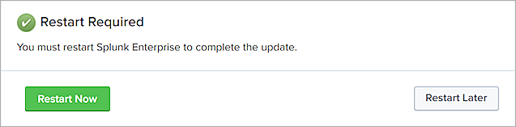

WatchGuard provides integration instructions to help customers configure WatchGuard products to work with products created by other organizations. If you need more information or technical support about how to configure a third-party product, go to the documentation and support resources for that product.
Integration Overview
This document describes how to integrate Splunk with WatchGuard EPDR or Panda Adaptive Defense 360 so that a Splunk administrator can view information from endpoint telemetry and alerts.
Platform and Software
The hardware and software used to complete the steps outlined in this document include:
- WatchGuard EPDR or Panda Adaptive Defense 360 with a SIEMFeeder license
- Splunk Enterprise 9.0
- Splunk Universal Forwarder
- WatchGuard Endpoint Add-on for Splunk Version 1.0
- WatchGuard Visibility App for Splunk Version 1.0
Integration Topology
This diagram shows the topology used in the integration. In this diagram, the Splunk Enterprise deployment can be either a locally-managed Splunk installation or a Splunk Cloud deployment.
Configure the SIEMFeeder Event Importer for WatchGuard EPDR or Adaptive Defense 360
To install and configure the SIEMFeeder Event Importer, complete the steps in the Configure and Run Event Importer Endpoint Security Help topic. Make sure to configure the Event Importer to deliver logs to a local file on disk. For example, /var/log/epdr/.
To make sure that log files are rotated before you reach your maximum allocated storage on the Event Importer server, we recommend that you use the directoryMaxSizeInMB configuration option in the Event Importer settings configuration.json file.
Splunk Enterprise Configuration
To configure Splunk Enterprise, complete these steps:
Add an Index to Splunk Enterprise
To add an index to Splunk Enterprise:
- Select Settings > Indexes, then click New Index.
- Enter an Index Name.
You can enter any name for the index. We recommend that you use the index endpoint to store WatchGuard EPDR and Adaptive Defense 360 events on your Splunk server. In this guide, we refer to the index name endpoint. - Accept the default values in the dialog box, or enter values, as required for your implementation.
- Click Save.
Configure the Splunk Universal Forwarder
After you add the index, download and install the Splunk Universal Forwarder on the same server where you configured the SIEMFeeder Event Importer.
To configure the Splunk Universal Forwarder:
- Connect the Splunk Universal Forwarder to the Splunk Enterprise server.
For information on how to connect the Universal Forwarder to your Splunk Enterprise server as a data input source, go to the Splunk documentation. - In the file, %splunkhome%/etc/system/local/inputs.conf, where %splunkhome% is the installation location for the Universal Forwarder, add this text:
[monitor:///var/log/epdr/*]
disabled = 0
index = endpoint
sourcetype = watchguard:endpoint:log
- Replace /var/log/epdr/ with the log directory you configured in the Event Importer configuration.
- Restart the Splunk Universal Forwarder application.
Install the WatchGuard Visibility App for Splunk
To install the WatchGuard Visibility app for Splunk:
- Log in to Splunk Enterprise.
- From the Apps menu, select Manage Apps.

- To browse the apps available from Splunkbase, click Browse More Apps.
- In Splunkbase, search for WatchGuard apps.
- Install the WatchGuard Endpoint Add-on for Splunk and the WatchGuard Visibility App for Splunk.
- Click Restart Now, then confirm that you want to restart.

Test the Integration
After the Universal Forwarder sends WatchGuard EPDR or Adaptive Defense 360 logs to Splunk, you can review endpoint information in the WatchGuard Visibility App for Splunk. You can also search the endpoint index for event data.
In the WatchGuard Visibility App for Splunk, you can review data from WatchGuard EPDR and Adaptive Defense 360 on the main dashboard or you can select Endpoint Dashboard from the Endpoint menu.